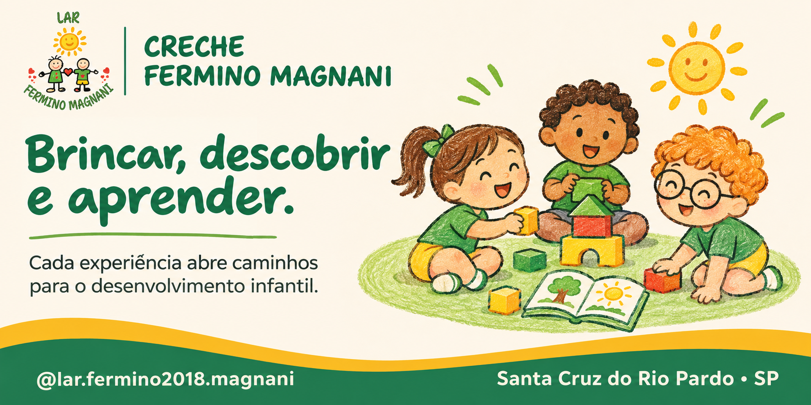

Amizade
Respeitar as diferenças e construir relações positivas.
Um cantinho digital dedicado à criatividade, à cooperação e à alegria de aprender brincando.
Conhecer o espaço
Estamos preparando uma experiência interativa para que as crianças possam aprender sobre respeito, cooperação e cuidado com o próximo de um jeito divertido.
Respeitar as diferenças e construir relações positivas.
Descobrir como trabalhar em equipe torna tudo melhor.
Entender que pequenos gestos podem fazer a diferença.